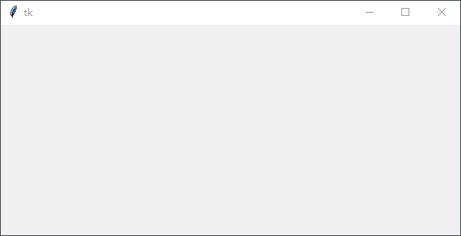
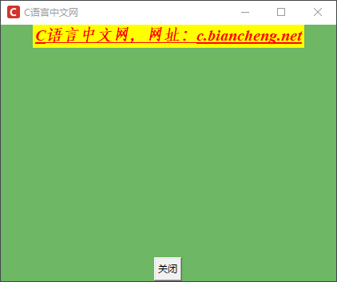
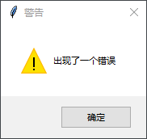
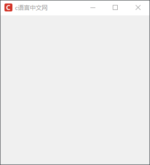

Tkinter主窗口
主窗口控件（window）是一切控件的基础，它好比是一台高速运转的机器，而其他控件则相当于这台机器上的部件，比如齿轮、链条、螺丝等等。由此我们知道，主窗口是一切控件的基础，所有的控件的都需要通过主窗口来显示。
Tkinter 提供了一些关于主窗口对象的常用方法，在本节对这些方法做简单的介绍。
下面通一个示例对上述表格中的常用方法做简单地介绍：
当 Tkinter 使用 WM_DELETE_WINDOW 协议与主窗口进行交互时，Tkinter 主窗口右上角
下面看一组简单的示例：
通过封装函数的形式来执行相应的 GUI 控件功能，这在学习 Tkinter 编程的整个过程中非常常见，比如 Button 控件的
下面看一组简单的示例：
Tkinter 提供了一些关于主窗口对象的常用方法，在本节对这些方法做简单的介绍。
创建一个空白窗口
Tkinter 能够很方便地创建一个空白窗口，示例代码如下：# 导入tk from tkinter import * # 创建一个主窗口对象 window = Tk() # 调用mainloop()显示主窗口 window.mainloop()程序运行结果如下：

图1：程序运行结果
图1：程序运行结果
1) 窗口常用方法
下表列出了窗口的常用方法，其中 window 代表主窗口对象：| 函数 | 说明 |
|---|---|
| window.title("my title") | 接受一个字符串参数，为窗口起一个标题 |
| window.resizable() | 是否允许用户拉伸主窗口大小，默认为可更改，当设置为 resizable(0,0)或者resizable(False,False)时不可更改 |
| window.geometry() | 设定主窗口的大小以及位置，当参数值为 None 时表示获取窗口的大小和位置信息。 |
| window.quit() | 关闭当前窗口 |
| window.update() | 刷新当前窗口 |
| window.mainloop() | 设置窗口主循环，使窗口循环显示（一直显示，指导窗口被关闭） |
| window.iconbitmap() | 设置窗口左上角的图标（图标是.ico文件类型） |
| window.config(background ="red") | 设置窗口的背景色为红色，也可以接受 16 进制的颜色值 |
| window.minsize(50,50) | 设置窗口被允许调整的最小范围，即宽和高各50 |
| window.maxsize(400,400) | 设置窗口被允许调整的最大范围，即宽和高各400 |
| window.attributes("-alpha",0.5) | 用来设置窗口的一些属性，比如透明度（-alpha）、是否置顶（-topmost）即将主屏置于其他图标之上、是否全屏（-fullscreen）全屏显示等 |
| window.state("normal") | 用来设置窗口的显示状态，参数值 normal（正常显示），icon（最小化），zoomed（最大化）， |
| window.withdraw() | 用来隐藏主窗口，但不会销毁窗口。 |
| window.iconify() | 设置窗口最小化 |
| window.deiconify() | 将窗口从隐藏状态还原 |
|
window.winfo_screenwidth() window.winfo_screenheight() |
获取电脑屏幕的分辨率（尺寸） |
|
window.winfo_width() window.winfo_height() |
获取窗口的大小，同样也适用于其他控件，但是使用前需要使用 window.update() 刷新屏幕，否则返回值为1 |
| window.protocol("协议名",回调函数) | 启用协议处理机制，常用协议有 WN_DELETE_WINDOW，当用户点击关闭窗口时，窗口不会关闭，而是触发回调函数。 |
下面通一个示例对上述表格中的常用方法做简单地介绍：
import tkinter as tk
window =tk.Tk()
#设置窗口title
window.title('C语言中文网')
#设置窗口大小:宽x高,注,此处不能为 "*",必须使用 "x"
window.geometry('450x300')
# 获取电脑屏幕的大小
print("电脑的分辨率是%dx%d"%(window.winfo_screenwidth(),window.winfo_screenheight()))
# 要求窗口的大小，必须先刷新一下屏幕
window.update()
print("窗口的分辨率是%dx%d"%(window.winfo_width(),window.winfo_height()))
# 如使用该函数则窗口不能被拉伸
# window.resizable(0,0)
# 改变背景颜色
window.config(background="#6fb765")
# 设置窗口处于顶层
window.attributes('-topmost',True)
# 设置窗口的透明度
window.attributes('-alpha',1)
# 设置窗口被允许最大调整的范围，与resizble()冲突
window.maxsize(600,600)
# 设置窗口被允许最小调整的范围，与resizble()冲突
window.minsize(50,50)
#更改左上角窗口的的icon图标,加载C语言中文网logo标
window.iconbitmap('C:/Users/Administrator/Desktop/favicon.ico')
#添加文本内容,并对字体添加相应的格式 font(字体,字号,"字体类型")
text=tk.Label(window,text="C语言中文网，网址：c.biancheng.net",bg="yellow",fg="red",font=('Times', 15, 'bold italic underline'))
#将文本内容放置在主窗口内
text.pack()
# 添加按钮，以及按钮的文本，并通过command 参数设置关闭窗口的功能
button=tk.Button(window,text="关闭",command=window.quit)
# 将按钮放置在主窗口内
button.pack(side="bottom")
#进入主循环，显示主窗口
window.mainloop()
程序的输出结果：
电脑的分辨率是1366x768 窗口的分辨率是450x300程序运行效果图：

图2：程序运行结果
图2：程序运行结果
2) protocol协议处理机制
Tinter 除了提供事件绑定机制之外，还提供了协议处理机制，它指的是应用程序和窗口管理器之间的交互，最常用的协议为 WM_DELETE_WINDOW。当 Tkinter 使用 WM_DELETE_WINDOW 协议与主窗口进行交互时，Tkinter 主窗口右上角
x号的关闭功能失效，也就是无法通过点击x来关闭窗口，而是转变成调用用户自定义的函数。下面看一组简单的示例：
from tkinter import Tk
# 导入 对话框控件
from tkinter import messagebox
# 创建主窗口
root = Tk()
# 定义回调函数，当用户点击窗口x退出时，执行用户自定义的函数
def QueryWindow():
# 显示一个警告信息，点击确后，销毁窗口
if messagebox.showwarning("警告","出现了一个错误"):
# 这里必须使用 destory()关闭窗口
root.destroy()
# 使用协议机制与窗口交互，并回调用户自定义的函数
root.protocol('WM_DELETE_WINDOW', QueryWindow)
root.mainloop()
程序运行结果：

图3：程序运行结果
图3：程序运行结果
通过封装函数的形式来执行相应的 GUI 控件功能，这在学习 Tkinter 编程的整个过程中非常常见，比如 Button 控件的
command参数也可以执行回调函数，如下所示：
import tkinter as tk
# 定义窗口
window = tk.Tk()
window.title('c语言中文网')
window.geometry('300x300')
window.iconbitmap('C:/Users/Administrator/Desktop/favicon.ico')
# 定义回调函数
def callback():
print("执行回调函数","C语言中文网欢迎您")
# 点击执行按钮
button = tk.Button(window, text="执行", command=callback)
button.pack()
window.mainloop()
点击窗口内的“执行”按钮，运行结果如下：
执行回调函数 C语言中文网欢迎您
设置窗的位置
当我们运行 Tkinter 程序时，主窗口都会出现在距离屏幕左上角指定的位置上，这是由 Tkinter 软件包默认设置的。但是在许多情况下，我们需要根据实际情况来移动窗口在电脑屏幕上的位置，这时应该如何处理呢？其实很简单，通过窗口对象的 geometry() 方法即可改变主窗口的位置，其语法格式如下：
geometry('450x400+300+200')
上述代码表示，设置主窗口的宽度为 450，高度为 400，同时窗口距离左边屏幕的距离为 300（以像素为单位），距离屏幕顶部的距离为 200，这里我们将带“+”的参数值称为“位置参数”，当然，您也可以将它们设置为负数，如下所示：
geometry('+-1500+-2000')
当设置了一个超过屏幕的负参数值时，主窗口会被移动至“屏幕之外”，此时就看不到主窗口了，这也是隐藏窗口的一种方法。下面看一组简单的示例：
import tkinter as tk
window = tk.Tk()
window.title('c语言中文网')
window.iconbitmap('C:/Users/Administrator/Desktop/favicon.ico')
# 设置窗口大小变量
width = 300
height = 300
# 窗口居中，获取屏幕尺寸以计算布局参数，使窗口居屏幕中央
screenwidth = window.winfo_screenwidth()
screenheight = window.winfo_screenheight()
size_geo = '%dx%d+%d+%d' % (width, height, (screenwidth-width)/2, (screenheight-height)/2)
window.geometry(size_geo)
window.mainloop()
程序运行后窗口将出现在屏幕的中间位置，如下所示：

图4：程序运行结果
图4：程序运行结果
关注公众号「站长严长生」，在手机上阅读所有教程，随时随地都能学习。内含一款搜索神器，免费下载全网书籍和视频。

微信扫码关注公众号